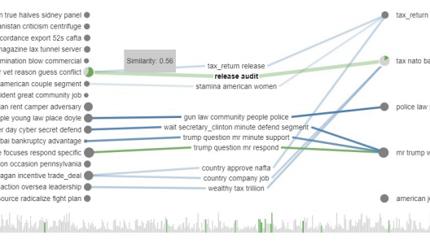

LTMA: Layered Topic Matching for the Comparative Exploration, Evaluation, and Refinement of Topic Modeling Results

Venue. BDVA (2018)
Authors. Mennatallah El-Assady, Fabian Sperrle, Rita Sevastjanova, Michael Sedlmair, Daniel Keim
Abstract. We present LTMA, a Layered Topic Matching approach for the unsupervised comparative analysis of topic modeling results. Due to the vast number of available modeling algorithms, an efficient and effective comparison of their results is detrimental to a data- and task-driven selection of a model. LTMA automates this comparative analysis by providing topic matching based on two layers (document-overlap and keyword-similarity), creating a novel topic-match data structure. This data structure builds a basis for model exploration and optimization, thus, allowing for an efficient evaluation of their performance in the context of a given type of text data and task. This is especially important for text types where an annotated gold standard dataset is not readily available and, therefore, quantitative evaluation methods are not applicable. We confirm the usefulness of our technique based on three use cases, namely: (1) the automatic comparative evaluation of topic models, (2) the visual exploration of topic modeling differences, and (3) the optimization of topic modeling results through combining matches.